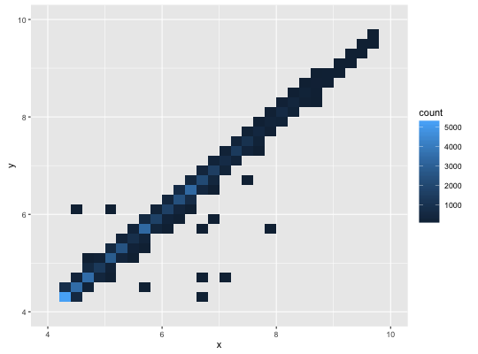
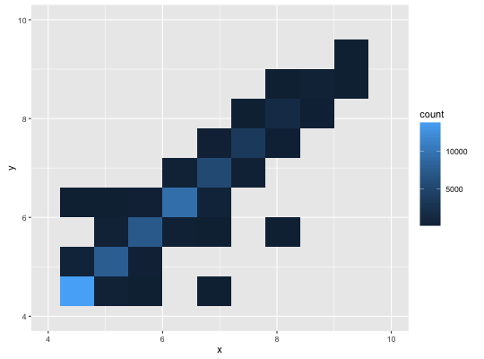
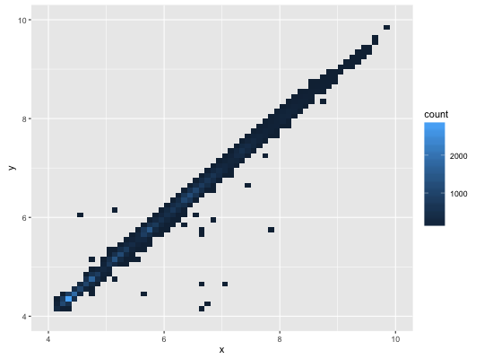

geom_bin2d(mapping = NULL, data = NULL, stat = "bin2d", position = "identity", show.legend = NA, inherit.aes = TRUE, ...)stat_bin_2d(mapping = NULL, data = NULL, geom = "tile", position = "identity", bins = 30, binwidth = NULL, drop = TRUE, show.legend = NA, inherit.aes = TRUE, ...)
aes or
aes_. If specified and inherit.aes = TRUE (the
default), is combined with the default mapping at the top level of the
plot. You only need to supply mapping if there isn't a mapping
defined for the plot.NA, the default, includes if any aesthetics are mapped.
FALSE never includes, and TRUE always includes.FALSE, overrides the default aesthetics,
rather than combining with them. This is most useful for helper functions
that define both data and aesthetics and shouldn't inherit behaviour from
the default plot specification, e.g. borders.layer. There are
three types of arguments you can use here:
color = "red" or size = 3.
stat associated with the layer.
geom_bin2d and stat_bin2d.bins if both set.TRUE removes all cells with 0 counts.Add heatmap of 2d bin counts.
stat_bin2d understands the following aesthetics (required aesthetics are in bold):
x
y
fill
d <- ggplot(diamonds, aes(x, y)) + xlim(4, 10) + ylim(4, 10) d + geom_bin2d()Warning message: Removed 478 rows containing non-finite values (stat_bin2d).
# You can control the size of the bins by specifying the number of # bins in each direction: d + geom_bin2d(bins = 10)Warning message: Removed 478 rows containing non-finite values (stat_bin2d). Warning message: Removed 4 rows containing missing values (geom_tile).
d + geom_bin2d(bins = 30)Warning message: Removed 478 rows containing non-finite values (stat_bin2d).# Or by specifying the width of the bins d + geom_bin2d(binwidth = c(0.1, 0.1))Warning message: Removed 478 rows containing non-finite values (stat_bin2d).
stat_binhex for hexagonal binning